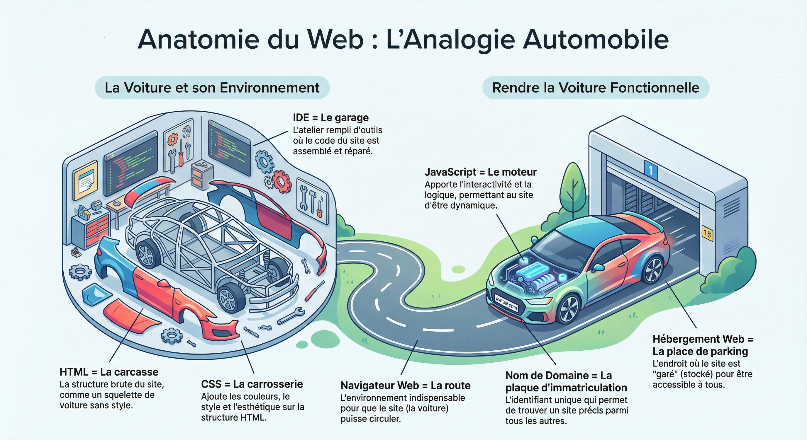
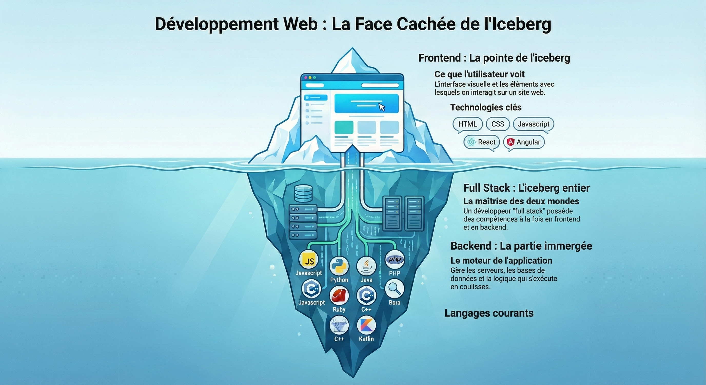

Les fondations du développement web
Le développement web, c'est l'art de créer des sites et applications que vous utilisez tous les jours : Instagram, YouTube, Netflix, TikTok... Tous ces sites sont construits avec des langages de programmation.

Voici l'anatomie du web avec ses langages principaux
Comme vous pouvez le voir sur le schéma, il existe de nombreux langages de programmation. Aujourd'hui, nous allons nous concentrer sur les deux plus essentiels et indispensables au fonctionnement d'un site web pour débuter : HTML et CSS.
C'est le squelette de votre page web. Il définit la structure et le contenu : les titres, les paragraphes, les images, les liens...
C'est le style de votre page. Il gère l'apparence : les couleurs, les tailles, les espacements, les animations...
Imaginez construire une maison :

La distinction entre développement Frontend et Backend
0Tout ce qui s'affiche dans votre navigateur. C'est la partie visible avec laquelle vous interagissez.
Langages : HTML, CSS, JavaScript
Le serveur, la base de données, la logique métier. C'est ce qui fait fonctionner l'application en coulisses.
Langages : PHP, Python, Node.js, Java...
Dans cet atelier, vous allez découvrir le développement frontend en créant des pages web visuelles et interactives avec HTML et CSS. C'est le point de départ idéal pour tout développeur web !
Pas besoin de connaissances préalables. Les résultats sont immédiats et visuels.
Tous les sites web du monde utilisent HTML et CSS. C'est la base incontournable.
Les développeurs web sont très recherchés. C'est un métier d'avenir avec de belles opportunités.
Donnez vie à vos idées et créez des interfaces magnifiques et fonctionnelles.
Maintenant que vous comprenez les bases, il est temps de passer à la pratique !
← Retour aux ateliers